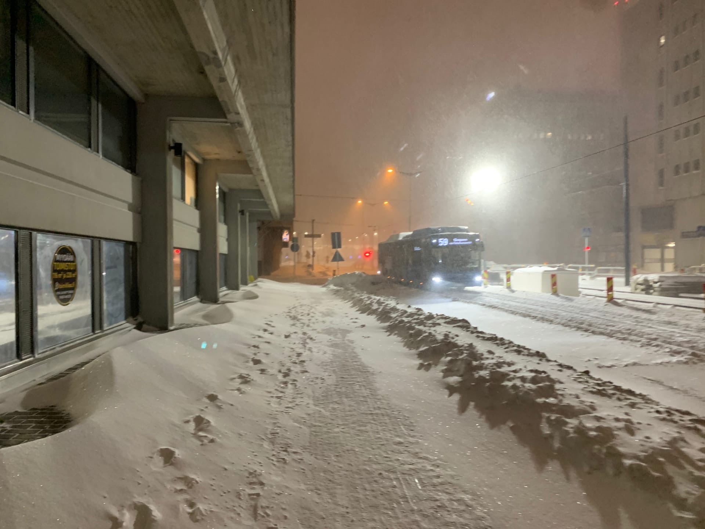

Public transportation
Finland has excellent public transport, both locally and nationally. Trains are modern and comfortable, and usually on time – even during the worst of the winter weather. The entire country is linked by a comprehensive bus and rail network.
Trains
Trains are comfortable, especially the express trains, which have restaurant cars, family cars (IC trains only, where a carriage is partly a playroom), power sockets, and a smoking room.
The express services generally have a first class section, branded as Business Class, where you pay an additional surcharge which gives you extra space, free newspapers, and possibly a snack. If you’re travelling long distances, for example Helsinki-Oulu, there are overnight sleeper trains, most of which also have car-carrier wagons serving the most important stations. When travelling by car, your vehicle will be loaded on the wagon in the evening and upon arrival in the morning you may continue your journey.
Buses & Coaches
The main bus and coach company operating in Finland is Oy Matkahuolto Ab which offers long-distance coach connections to practically all parts of Finland. In Lapland, buses are the only public transport available as the rail network doesn’t extend to the extreme north. Buses can occasionally be slightly higher priced than trains, but usually between the large cities they are priced competitively, but they always offer more direct connections at more frequent intervals than the trains.
Trams
Currently only the city of Helsinki is served by a Light Rail System, although both Tampere and Turku have plans in the pipeline for future tram systems.